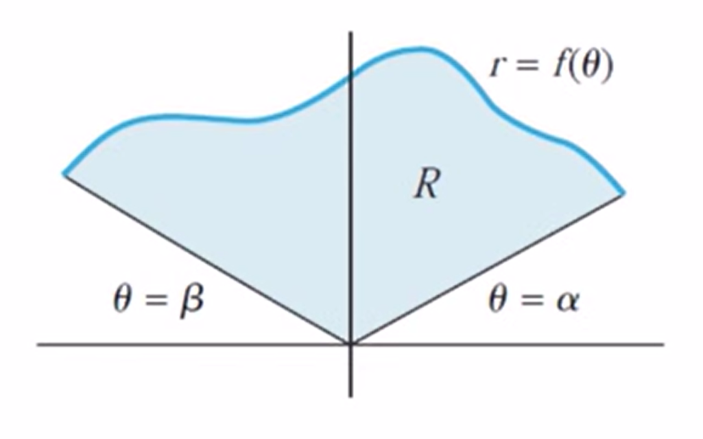

After a short review of polar functions, there are three concepts we need to know:
All of these concepts are based on things we already know—we just have to apply them in a new situation.
When working with polar functions, there are two types of derivatives we need to understand.
The first, and least interesting or used, is finding \(\frac{dr}{d\theta}\)—the derivative of \(r\) with respect to \(\theta\). This simply gives us the instantaneous rate of change of the radius as the angle changes.
Find \(\frac{dr}{d\theta}\) if \(r=2-3\sin(4\theta)\).
$$\frac{dr}{d\theta}=-12\cos(4\theta)$$
The second, and more important, is finding \(\frac{dy}{dx}\)—the slope of the polar curve in the \(xy\)-plane. If you are asked for the derivative of a polar function this is the one you are being asked to provide.
Finding \(\frac{dy}{dx}\) is fairly easy—as long as you remember the product rule!
To find the derivative of the polar function \(r=f(\theta)\) start with the formulas we used to convert between cartesian and polar coordinates:
\(x=r\cos(\theta)\) \(y=r\sin(\theta)\)
But since we have \(r=f(\theta)\) we can rewrite these as:
\(x=f(\theta)\cos(\theta)\) \(y=f(\theta)\sin(\theta)\)
Then we can apply the product rule to each of these:
$$\begin{align}\frac{dx}{d\theta} &= f'(\theta)\cos(\theta)-f(\theta)\sin(\theta)=\frac{dr}{d\theta}\cos(\theta)-r\sin(\theta) \\ \frac{dy}{d\theta} &= f'(\theta)\sin(\theta)+f(\theta)\cos(\theta)=\frac{dr}{d\theta}\sin(\theta)+r\cos(\theta)\end{align}$$
Now we have \(\frac{dx}{d\theta}\) and \(\frac{dy}{d\theta}\), so we just need to combine them to get \(\frac{dy}{dx}\)
If \(\frac{dx}{d\theta}\) and \(\frac{dy}{d\theta}\) are continuous and if \(\frac{dx}{d\theta}\neq0\), then \(y\) is a differentiable function of \(x\) and
$$\frac{dy}{dx}=\frac{\frac{dy}{d\theta}}{\frac{dx}{d\theta}}=\frac{\frac{dr}{d\theta}\sin(\theta)+r\cos(\theta)}{\frac{dr}{d\theta}\cos(\theta)-r\sin(\theta)}$$
Find the derivative of \(r=4\cos(\theta)\).
\(\frac{dr}{d\theta}=-4\sin(\theta)\)
$$\frac{\frac{dr}{d\theta}\sin(\theta)+r\cos(\theta)}{\frac{dr}{d\theta}\cos(\theta)-r\sin(\theta)}$$
$$\frac{-4\sin^2(\theta)+4\cos^2(\theta)}{-4\sin(\theta)\cos(\theta)-4\cos(\theta)\sin(\theta)}$$
Simplify:
$$\frac{\sin^2(\theta)-\cos^2(\theta)}{\sin(2\theta)}$$
Finding the arc length of a polar function and the area enclosed by a polar function use the same basic method we have been using: writing an expression for a "small piece" of what we are looking for and then integrating to find the total.
The formula for the arc length of a polar curve \(r=f(\theta)\) starts with the formula for the arc length of parametric functions $$dL=\sqrt{\left(\frac{dx}{dt}\right)^2+\left(\frac{dy}{dt}\right)^2}dt$$
We approach this by simply thinking about \(\theta\) as a parameter
\(x=f(\theta)\cos(\theta)\) \(y=f(\theta)\sin(\theta)\)
Thus, if \theta is our parameter, it works just like \(t\), and all we need to do is replace the \(t\) in our expression with \(\theta\):
$$dL=\sqrt{\left(\frac{dx}{d\theta}\right)^2+\left(\frac{dy}{d\theta}\right)^2}d\theta$$
Unfortunately, this isn't quite what we need since we don't have functions for \(x\) or \(y\)—all we have is \(r\) in terms of \(\theta\).
We need to find a way to express \(\frac{dx}{d\theta}\) and \(\frac{dy}{d\theta}\) in terms of \(r\) and \(\theta\) only.
It turns out that we've pretty much already done this when we found the derivative of a polar function:
$$\begin{align}\frac{dx}{d\theta} &= \frac{dr}{d\theta}\cos(\theta)-r\sin(\theta) \\ \frac{dy}{d\theta} &= \frac{dr}{d\theta}\sin(\theta)+r\cos(\theta)\end{align}$$
All we really need to do is to take these expressions and plug them into our formula.
Doing this, though, creates a very complicated expression, so let's see if we can make things a little simpler before susbtituting.
$$\begin{align}\left(\frac{dx}{d\theta}\right)^2+\left(\frac{dy}{d\theta}\right)^2 &= \left(\frac{dr}{d\theta}\cos(\theta)-r\sin(\theta)\right)^2+\left(\frac{dr}{d\theta}\sin(\theta)+r\cos(\theta)\right)^2 \\ &= r^2+\left(\frac{dr}{d\theta}\right)^2\end{align}$$
If no segment of the polar curve \(r=f(\theta)\) is traced more than once as \(\theta\) increases from \(\alpha\) to \(\beta\), and if \(\frac{dr}{d\theta}\) is continuous for \(\alpha\leq\theta\leq\beta\), then the arc length \(L\) from \(\theta=\alpha\) to \(\theta=\beta\) is $$L=\int_\alpha^\beta\sqrt{r^2+\left(\frac{dr}{d\theta}\right)^2}d\theta$$
Finding area of a function expressed in polar coordinates presents us with a slightly different situation than we have in rectangular coordinates:
We are now looking to find the area between two angles \(\alpha\) and \(\beta\).
Our general idea when finding the area of a region in the plane was to draw rectangles, add up the areas, and let the "width" of the rectangles go to zero (using limits) to get our definite integral giving us area. This process worked in cartesian coordinates—but rectangles are not going to work in polar coordinates.
We need something else: sectors of circles.

A sector is simply a "small piece" of a circle.
This means that the formula for the area of a sector is based on the formula for the area of a circle: $$dA=\pi r^2\left(\frac{d\theta}{2\pi}\right)$$ where \(\frac{d\theta}{2\pi}\) simply represents the fraction of the entire circle given by the angle of sector \(d\theta\).
So, we really already have the formula we need, but we can "clean it up" a bit: $$dA=\frac{1}{2}r^2d\theta$$
This is our formula for a small piece of area enclosed by a polar function. The nice thing is that it's already a Riemann sum, so we don't need to do anything else before we integrate!
If \(\alpha\) and \(\beta\) are angles satisfying the condition $$\alpha\lt\beta\lt\alpha+2\pi$$ And if \(f(\theta)\) is continuous and wither nonnegative or nonpositive for \(\alpha\leq\theta\leq\beta\), then the area \(A\) of the region \(R\) bounded by the polar curve \(r=f(\theta)\) and the lines \(\theta=\alpha\) and \(\theta=\beta\) is $$A=\int_\alpha^\beta\frac{1}{2}\left[f(\theta)\right]^2d\theta$$
Given the function \(r=4+3\sin(\theta)\) for \(0\le\theta\le2\pi\). Find the arc length and area enclosed by the function.
Arc Length:
$$\begin{align}dL &= \sqrt{r^2+\left(\frac{dr}{d\theta}\right)^2}d\theta \\ &= \sqrt{(4+3\sin(\theta))^2+(3\cos(\theta))^2}d\theta \\ &= \sqrt{25+24\sin(\theta)}d\theta\end{align}$$
$$\begin{align}L &= \int_0^{2\pi}\sqrt{25+24\sin(\theta)}d\theta \\ &= 28.814\end{align}$$
Area:
$$\begin{align}dA &= \frac{1}{2}r^2d\theta \\ &= \frac{1}{2}(4+3\sin(\theta))\end{align}$$
$$\begin{align}A &= \int_0^{2\pi}\frac{1}{2}(4+3\sin(\theta))^2d\theta \\ &= 64.403\end{align}$$